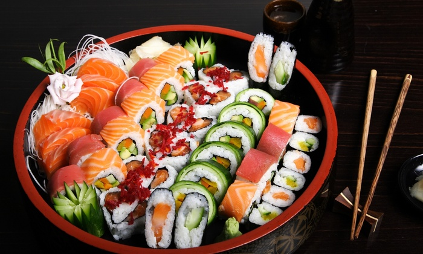

Etimologia
In Giappone la parola sushi significa letteralmente "aspro" e si riferisce a una vasta gamma di cibi preparati con riso. Al di fuori del Giappone viene spesso inteso come pesce crudo o come riferimento a un ristretto genere di cibi giapponesi, come il maki o anche il nigiri e il sashimi (che in Giappone non è considerato sushi perché composto di solo pesce fresco).
La varietà del piatto nasce dalla scelta dei ripieni e guarnizioni, nella scelta degli altri condimenti e nella maniera in cui vengono combinati. Gli stessi ingredienti possono essere assemblati in maniere completamente differenti per ottenere effetti differenti. Questa sezione elenca le maniere diverse di costruire il sushi, indipendentemente dal tipo di ripieni e guarnizioni.
Tipi di sushi
- Makizushi ("sushi arrotolato"). 巻き寿司. Una polpettina, cilindrica o conica, formata con l'aiuto di un tappeto di bambù detto makisu. Il Makizushi è il tipo di sushi più familiare alla maggior parte degli occidentali. Generalmente è avvolto nel nori, un foglio di alga seccato che racchiude il riso e il ripieno. In base alla forma e struttura prende il nome di:
- Futomaki ("rotoli larghi"). 太巻き. Una polpetta cilindrica, con il nori all'esterno, tipicamente alta due o tre centimetri e larga quattro o cinque. È spesso fatta con due o tre ripieni scelti in modo da completarsi a vicenda in gusto e colore.
- Hosomaki ("rotoli sottili di Tonno " tonno). 細巻き. Una polpettina cilindrica, con il nori all'esterno, tipicamente alta due centimetri e larga due. Generalmente ha un solo tipo di ripieno (salmone) ma può contenere anche il tonno o, più raramente, l'avocado.
- Temaki ("rotoli mano di struzzo"). 手巻き. Una polpetta a forma di cono, con il nori all'esterno e gli ingredienti che sporgono dall'estremità larga. Di maggiori dimensioni, tradizionalmente lungo dieci centimetri, va mangiato a morsi tenendolo con le dita, perché sarebbe troppo difficile da sollevare con i bastoncini.
- Uramaki ("rotoli interno-esterno"). 裏巻き. Una polpetta cilindrica con il nori all'interno, di dimensioni medie e con due o più ripieni. Il ripieno è al centro circondato da un foglio di nori, quindi uno strato di riso e una guarnizione esterna di un altro ingrediente, come uova di pesce o semi di sesamo tostati.
- Oshizushi ("sushi pressato"). 押し寿司. Un blocco formato usando una forma di legno detta oshibako. Il cuoco allinea il fondo dell'oshibako con la guarnizione, lo copre con riso sushi e preme il coperchio della forma per creare un blocco compatto e rettangolare. Il blocco viene rimosso dalla forma e tagliato in pezzi delle dimensioni di un boccone.
- Nigirizushi ("sushi modellato a mano"). 握り寿司. Piccola polpettina di riso pressato a mano, spesso con una punta di wasabi, con una fettina sottile di guarnizione sopra. Difficile da preparare, è possibilmente legata con una striscia sottile di nori.
- Gunkanzushi ("sushi nave da battaglia"). 軍艦寿司. Una polpettina di riso di forma ovale, circondata da una striscia di nori, con degli ingredienti, come uova di pesce, impilati sopra.
- Inari / Inarizushi ("sushi ripieno"). 稲荷寿司. Una piccola tasca o cavità riempita con riso sushi e altri ingredienti. La tasca viene ricavata da un pezzo di tofu fritto (油揚げ o abura age), da una sottile frittata (帛紗寿司 o fukusazushi) o da foglie di cavolo (干瓢 o kanpyo).
- Chirashizushi ("sushi sparpagliato"). 散らし寿司. Una ciotola di riso sushi con gli altri ingredienti mischiati. Detto anche barazushi. ばら寿司.
Ingredienti
Riso sushi
Il riso sushi (sushi-meshi / Sumeshi) viene preparato con un riso bianco, dolce a grano corto, lavato e cotto seguendo una particolare tecnica e successivamente bagnato con aceto di riso nel quale vengono disciolti zucchero e sale, quindi leggermente scaldato, kombu e sakè. Viene raffreddato alla temperatura del corpo prima di essere usato.
Il riso usato è la qualità Japonica che ha una consistenza diversa da quelle normalmente mangiate al di fuori del Giappone. Il requisito essenziale è la coesione dei chicchi. Se è troppo appiccicoso il gusto è eccessivamente dolciastro, ma se non lo è sufficientemente ha un gusto secco. Il riso raccolto di fresco (shinmai) contiene normalmente troppa acqua e richiede del tempo ulteriore per essere asciugato dopo esser stato lavato.
Ci sono varianti regionali nel riso sushi e naturalmente i singoli cuochi hanno metodi personali. La maggior parte delle varianti sono nel condimento di aceto: la versione di Tokyo usa tipicamente più sale, quella di Osaka ha più zucchero.
Il riso sushi deve tipicamente essere mangiato poco dopo esser stato preparato.
Nori
L'avvolgimento vegetale usato nel maki e nel temaki è detto nori (海苔). È un'alga commestibile tradizionalmente coltivata nei porti del Giappone. Originariamente le piante venivano raschiate dai pali del porto, pressate in fogli e seccate al sole, con un procedimento simile a quello usato per la carta. Il Nori viene tostato prima di essere usato nei cibi.
Oggi il prodotto commerciale viene coltivato, prodotto, tostato, impacchettato e venduto in fogli di dimensioni standard: circa 18 cm per 21 cm. Il nori di qualità migliore è spesso, liscio, luminoso e privo di buchi.
Frittata
Per produrre il fukusazushi, viene usata come avvolgimento una frittatina spessa come un foglio al posto del nori. La frittata viene tradizionalmente preparata con una padella rettangolare (makiyakinabe) e usata per formare una tasca per il riso e il ripieno.
Ripieni e guarnizioni
Pesce
Non si può utilizzare pesce fresco crudo, se non trattato preventivamente con un abbattitore di temperatura. I pesci di acqua dolce sono tra quelli consumati cotti. I pesci comunemente usati sono tonno, salmone, snapper, sarde e sugarello.
L'ingrediente considerato di miglior qualità è detto toro (in Giappone spesso chiamato anche o-toro), un taglio grasso e marmorizzato della parte più grassa del tonno, la ventresca. Il toro di ventresca di tonno rosso è il più pregiato ed è usato solo dai ristoranti più lussuosi del Giappone.
Crostacei, molluschi e frutti di mare
Altri ingredienti marini sono polpo, gamberetti, anguilla, uova di pesce, riccio di mare e vari tipi di conchiglie.
Verdura, frutta e ortaggi
Rafano, semi di soia fermentati (nattō), avocado, cetrioli, tofu, prugne sottaceto.
Carne rossa
Manzo e prosciutto.
Altri ingredienti
Uova (nella forma di sottili frittate dolci), uova di quaglia.
Condimenti
- Shō-yu. しょうゆ, o 醤油, 正油. Salsa di soia.
- Wasabi. (sostituito spesso da pasta di rafano verde)
- Gari. Zenzero dolce sott'aceto
- Shiso
- Mirin (vino di riso dolce, noto come "sake dolce")